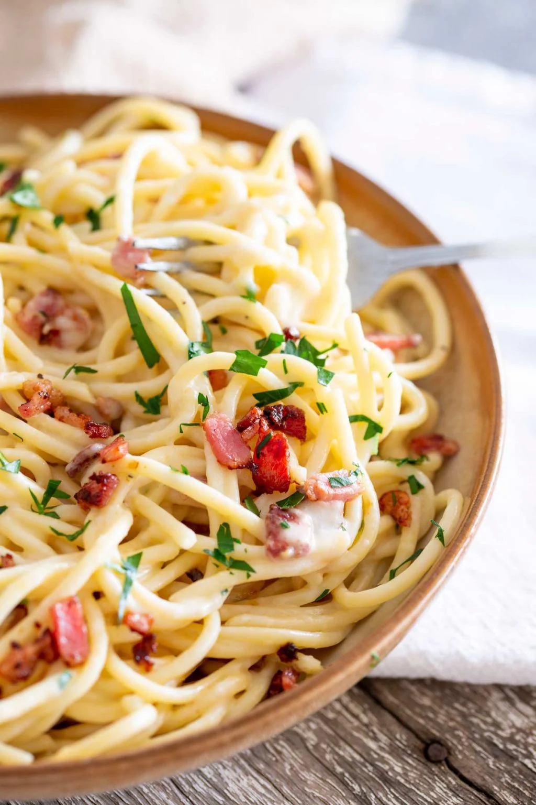

Spaghetti with Cream and Bacon

Description
This is the first pasta I learned to cook, and it's very difficult to get wrong
Ingredients
- 200g spaghetti
- 1/2 cup of cream
- 1/2 cup of milk
- 1/2 cup of diced onion
- 5 strips of bacon, chopped
- 1/2 tbsp of butter
- 2 cloves of garlic, minced
- 1 tsp of salt
- ground pepper
- 1/4 cup of parsley, chopped
Steps
- Fill a large pot with water and add the pasta when it gets to a rolling boil.
- While the water boils, melt the butter on a saucepan. Add the onion, the garlic, and the bacon, and cook until the bacon is crispy.
- Add the pasta to the water pot and let it cook. Try single pieces occasionally to check if it's ready (you can throw them at a window. If they stick, they're ready).
- Continue stirring the bacon and add the cream and the milk. Add the salt and pepper and let the flavors integrate.
- Strain the pasta. Add the parsley to the sauce and give it a final stir.
- Pour the sauce into the pasta and serve with grated parmesan on top.